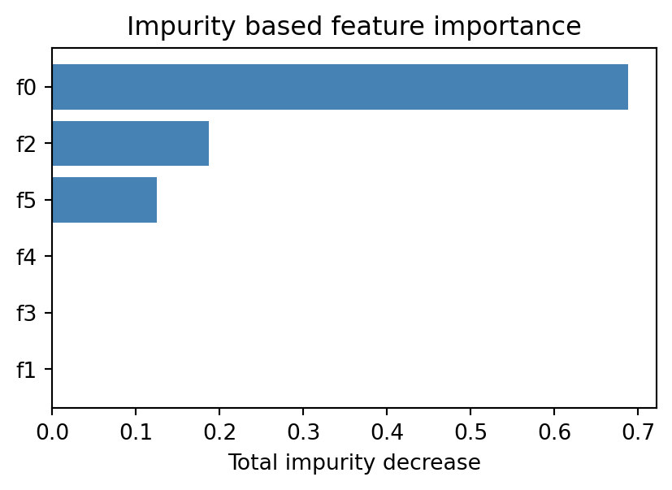

A decision tree is one of the few machine learning models that you can draw on a whiteboard, hand to a domain expert, and have them follow without any background in statistics. This transparency is not an accident of presentation. It reflects the underlying mathematics. A tree encodes a function that is constant on rectangular regions of the input space, and the path from root to leaf is a literal sequence of yes or no questions about the features. This chapter develops decision trees from first principles. We treat the tree as a piecewise constant model, derive the recursive partitioning algorithm that builds it, study the CART formulation in detail, and analyze the prediction mechanics, interpretability, and the characteristic strengths and weaknesses that follow from the geometry.
101.1 1. The Tree as a Piecewise Constant Model
101.1.1 1.1 The function class
Let the input space be \(\mathcal{X} \subseteq \mathbb{R}^p\) and the target be \(y\), either a real number for regression or a class label for classification. A decision tree partitions \(\mathcal{X}\) into \(M\) disjoint regions \(R_1, R_2, \ldots, R_M\) whose union is all of \(\mathcal{X}\). On each region the model predicts a single constant. For regression the model is
where \(\mathbf{1}\{\cdot\}\) is the indicator function and \(c_m\) is the constant associated with region \(R_m\). Because the regions are disjoint and exhaustive, exactly one indicator is active for any \(x\), so \(f(x)\) returns the constant of the region containing \(x\). The output is therefore a step function. It is flat inside each region and jumps at the region boundaries.
What makes a tree special among piecewise constant models is the shape of the regions. The regions are axis aligned rectangles, also called hyperrectangles or boxes, produced by a sequence of binary splits on single features. Each internal node tests a condition of the form \(x_j \le t\) for some feature index \(j\) and threshold \(t\). The set of constraints accumulated along the path from the root to a leaf carves out one box. This restriction to axis aligned cuts is what couples the model to its tree structure and to its interpretability.
101.1.2 1.2 Why piecewise constant
Approximating an arbitrary function by a constant on small enough regions is a classical idea. If the regions shrink and multiply, a step function can approximate any reasonable target to arbitrary accuracy, much as a Riemann sum approximates an integral. The modeling question is not whether step functions are expressive enough in the limit. They are. The question is how to choose the regions from finite data so that the model generalizes. A tree answers this by a greedy, data driven search over axis aligned partitions, which we develop next.
101.2 2. Recursive Partitioning
101.2.1 2.1 The core idea
Finding the partition that globally minimizes training error over all possible trees is computationally intractable. The number of ways to carve \(\mathcal{X}\) into boxes is astronomical, and the problem is NP hard. Decision tree learning sidesteps this with a greedy top down strategy known as recursive partitioning. Begin with all the data in a single region, the root. Search for the single split that most improves a chosen objective. Apply that split, producing two child regions. Then recurse on each child independently, treating it as a fresh subproblem. The recursion stops when a stopping rule fires, and the surviving regions become leaves.
The greediness is the key simplification. At each node we optimize the immediate gain from one split without looking ahead to how that split constrains later splits. This makes each step cheap and the overall algorithm fast, at the cost of no guarantee of global optimality. In practice the greedy heuristic works remarkably well, and its failure modes are well understood.
101.2.2 2.2 The split search
Consider a node holding a set of training observations. A candidate split is a pair \((j, t)\), a feature \(j\) and a threshold \(t\), that sends observations with \(x_j \le t\) to the left child and the rest to the right child. We score a candidate by how much it reduces an impurity or loss measure \(L\):
where \(N\) is the number of observations at the node and \(N_L\), \(N_R\) are the counts routed to the children. The second and third terms form a weighted average of child impurities, weighting each child by its share of the data. We choose the split that maximizes \(\Delta(j, t)\).
The search over thresholds is finite. For a numeric feature, the only thresholds that matter sit between consecutive distinct sorted values, because moving \(t\) within a gap does not change how any observation is routed. With \(n\) observations there are at most \(n - 1\) such candidate thresholds per feature. The full split search at a node therefore costs \(O(p \, n \log n)\) if we sort each feature, or less with presorting and incremental impurity updates.
Left unchecked, recursion continues until each leaf holds a single observation or a set of identical observations, yielding a tree that fits the training data perfectly and generalizes poorly. Practical stopping rules cap this growth. Common rules include a maximum depth, a minimum number of observations required to attempt a split, a minimum number of observations per leaf, and a minimum impurity decrease below which a split is rejected. These rules are forms of pre pruning. They are blunt, because a split that looks unhelpful now may enable a valuable split later, a problem the greedy search cannot see. For this reason many implementations grow a large tree and then prune it back, a strategy we discuss in Section 4.
101.3 3. CART
CART, short for Classification And Regression Trees, is the formulation introduced by Breiman, Friedman, Olshen, and Stone in 1984. It is the most widely used decision tree algorithm and the default behind libraries such as scikit-learn. CART produces strictly binary trees, handles both regression and classification, and pairs tree growing with a principled pruning procedure.
101.3.1 3.1 The regression objective
For regression CART measures impurity at a node by the sum of squared errors. Given the observations in region \(R_m\), the optimal constant is the mean of their targets,
\[
c_m = \frac{1}{N_m} \sum_{x_i \in R_m} y_i,
\]
and the node impurity is the within node variance scaled by the count,
\[
L(R_m) = \sum_{x_i \in R_m} (y_i - c_m)^2.
\]
The mean minimizes squared error, which is why it is the natural leaf prediction. The split search then chooses the cut that most reduces total squared error across the two children.
101.3.2 3.2 Classification impurity measures
For classification the leaf prediction is the majority class, and impurity quantifies how mixed the class labels are at a node. Let \(\hat{p}_{mk}\) be the proportion of class \(k\) among the observations in node \(m\). Two impurity measures dominate practice. The Gini index is
Both are zero when a node is pure, meaning all observations share one class, and both are maximized when the classes are evenly mixed. They are concave functions of the class proportions, which is exactly the property that guarantees a split can never increase the weighted impurity, so the impurity decrease \(\Delta\) is always nonnegative. CART uses the Gini index by default. It is cheaper to compute than entropy since it avoids logarithms, and in practice the two rarely produce materially different trees. Misclassification error, \(1 - \max_k \hat{p}_{mk}\), is sometimes used to guide pruning but is a poor splitting criterion because it is not strictly concave and is insensitive to changes in node composition that do not flip the majority class.
101.3.3 3.3 A worked split
Suppose a binary classification node holds 80 observations, 40 of each class, so \(G(\text{node}) = 1 - (0.5^2 + 0.5^2) = 0.5\). A candidate split sends 40 observations left, of which 36 are class A, and 40 right, of which 36 are class B. Then
and the weighted child impurity is \(\tfrac{40}{80}(0.18) + \tfrac{40}{80}(0.18) = 0.18\). The impurity decrease is \(0.5 - 0.18 = 0.32\), a large gain, reflecting that the split has nearly separated the classes.
101.3.4 3.4 Categorical features and missing values
CART handles categorical predictors by considering splits that partition the categories into two groups. For a binary target there is an efficient shortcut. Order the categories by the proportion of the positive class within each category, and the optimal binary split respects that ordering, so only \(L - 1\) thresholds need to be examined for \(L\) categories rather than all \(2^{L-1} - 1\) subsets. For missing values CART introduces surrogate splits. A surrogate is an alternative feature whose split best mimics the routing of the primary split, used to send an observation down the tree when its primary feature is missing. This lets the tree use partially observed records without imputation.
101.4 4. Pruning
101.4.1 4.1 Why prune
A fully grown CART tree overfits. Pre pruning with stopping rules is myopic, so CART instead grows a large tree \(T_0\) and prunes it back using cost complexity pruning, also called weakest link pruning. Define the cost complexity of a subtree \(T\) as
where \(|T|\) is the number of leaves, the first term is the total impurity of the tree, and \(\alpha \ge 0\) is a complexity penalty that charges for each leaf. When \(\alpha = 0\) the full tree minimizes the cost. As \(\alpha\) grows the penalty favors smaller trees.
101.4.2 4.2 The pruning path
A central result of CART is that as \(\alpha\) increases from zero, the sequence of subtrees that minimize \(C_\alpha\) is nested. Each subtree in the sequence is obtained from the previous one by collapsing the internal node whose removal increases impurity least per leaf removed, the weakest link. This yields a finite, nested sequence of candidate trees indexed by \(\alpha\). We then select among them by cross validation, choosing the \(\alpha\) that minimizes estimated generalization error. The result is a tree whose size is tuned to the data rather than fixed by an arbitrary depth limit.
101.5 5. Prediction
101.5.1 5.1 Routing an observation
Prediction is a traversal. Start at the root, evaluate its test \(x_j \le t\), follow the matching branch to a child, and repeat until reaching a leaf. The leaf carries the prediction: the mean target for regression, the majority class for classification. For probabilistic classification the leaf reports the class proportions \(\hat{p}_{mk}\) as estimated class probabilities.
Code
import numpy as npimport matplotlib.pyplot as pltfrom sklearn.datasets import make_classificationfrom sklearn.tree import DecisionTreeClassifierXc, yc = make_classification( n_samples=400, n_features=6, n_informative=3, n_redundant=0, random_state=42,)names = [f"f{i}"for i inrange(Xc.shape[1])]clf = DecisionTreeClassifier(max_depth=4, random_state=42).fit(Xc, yc)# Routing one observation root to leaf returns a region constant.sample = Xc[:1]print("prediction:", clf.predict(sample)[0])print("leaf class probabilities:", np.round(clf.predict_proba(sample)[0], 3))print("tree depth:", clf.get_depth())# Feature importance: total impurity decrease per feature.imp = clf.feature_importances_order = np.argsort(imp)fig, ax = plt.subplots(figsize=(5, 3))ax.barh([names[i] for i in order], imp[order], color="steelblue")ax.set_title("Impurity based feature importance")ax.set_xlabel("Total impurity decrease")plt.show()
prediction: 1
leaf class probabilities: [0.007 0.993]
tree depth: 4

101.5.2 5.2 Cost of prediction
The number of tests to reach a leaf equals the depth of the leaf. For a balanced tree over \(n\) training points the depth is \(O(\log n)\), so prediction is extremely fast and independent of the number of features that the tree does not use. Each test inspects a single feature, so unused features cost nothing at inference time. This makes trees attractive in latency sensitive settings and as the base learners inside ensembles, where millions of predictions are aggregated.
101.5.3 5.3 The geometry of predictions
Because every test is of the form \(x_j \le t\), the decision boundaries are segments of axis aligned hyperplanes. The prediction surface is therefore a tiling of \(\mathcal{X}\) into boxes, each painted with one constant. Visualizing a tree in two dimensions shows a staircase of rectangles. This geometry explains both the model’s flexibility, since boxes can be made arbitrarily small, and its limitation, since a smooth or diagonal boundary must be approximated by a jagged stack of rectangles.
101.6 6. Interpretability
101.6.1 6.1 Reading the tree
The single greatest practical advantage of a decision tree is that the model is its own explanation. Each prediction corresponds to a path of conditions, and that path can be read as a rule: if income is at most 50000 and age is over 40 and tenure is at most 3 years, then predict default. Such rules are auditable by non specialists, which matters in regulated domains like credit, insurance, and medicine where decisions must be justified. Shallow trees in particular serve as compact, legible decision aids.
101.6.2 6.2 Feature importance
Trees yield a natural measure of feature importance. The importance of a feature is the total impurity decrease, summed over all splits that use it, weighted by the number of observations routed through each split. Features that produce large, frequent reductions in impurity rank as important. This impurity based importance is a useful diagnostic, though it has a known bias toward high cardinality and continuous features, which offer more candidate thresholds and thus more chances to appear beneficial by chance. Permutation importance, which measures the drop in accuracy when a feature is randomly shuffled, is a more reliable alternative when the bias is a concern.
101.6.3 6.3 The limits of interpretability
Interpretability degrades with size. A tree of depth twenty has up to a million leaves, and no human reads a million rules. Interpretability is therefore a property of small trees, and there is a genuine tension between accuracy and legibility: the deeper the tree, the better it can fit but the harder it is to explain. The honest framing is that trees are interpretable when kept shallow, and they trade that interpretability away as they grow.
101.7 7. Strengths and Weaknesses
101.7.1 7.1 Strengths
Trees require little data preparation. They are invariant to monotone transformations of individual features, because a split on \(x_j \le t\) produces the same partition as a split on any monotonically rescaled version of \(x_j\). Consequently there is no need to standardize, normalize, or log transform inputs, and the model is robust to outliers in feature space since an extreme value simply lands in some leaf. Trees handle mixed data types, numeric and categorical together, within one framework. They model interactions automatically, since a split on one feature conditions all subsequent splits below it. They cope with missing data through surrogate splits. And they are fast to train and to query, with prediction cost logarithmic in tree size.
101.7.2 7.2 Weaknesses
The defining weakness is high variance. Because the algorithm is greedy and splits are chosen from finite data, a small change in the training set can change an early split, which cascades into a completely different tree. Trees are unstable estimators. They also do not extrapolate. A regression tree predicts a constant outside the range of the training data, since the relevant leaf simply extends its value, so trees cannot capture trends beyond observed inputs. The axis aligned geometry makes diagonal or smooth boundaries inefficient to represent, requiring many splits to approximate a single oblique cut. Single trees are typically less accurate than well tuned alternatives, and impurity based importance is biased as noted above. Finally, without pruning or depth control, trees overfit aggressively.
101.7.3 7.3 From single trees to ensembles
The strengths and weaknesses point directly to the modern role of trees. Their low bias and high variance is exactly the profile that averaging cures. Bagging trains many trees on bootstrap samples and averages them, sharply reducing variance. Random forests add feature subsampling at each split to decorrelate the trees further. Gradient boosting builds trees sequentially, each correcting the residual errors of its predecessors, trading some interpretability for state of the art accuracy on tabular data. In every case the humble piecewise constant tree developed in this chapter is the building block. Understanding the single tree, its recursive construction, its CART objective, and its geometric behavior, is the prerequisite for understanding the ensembles that dominate practical tabular learning.
101.8 8. Summary
A decision tree is a piecewise constant model whose regions are axis aligned boxes carved by binary splits on single features. Recursive partitioning builds the tree greedily, choosing at each node the split that most reduces an impurity measure, until stopping rules or pruning halt growth. CART formalizes this with squared error for regression and the Gini index or entropy for classification, then tunes tree size by cost complexity pruning under cross validation. Prediction is a fast root to leaf traversal returning a region constant. The model is exceptionally interpretable when shallow and requires minimal preprocessing, but it suffers from high variance, an inability to extrapolate, and an awkward fit to non axis aligned structure. These properties make the single tree both a useful standalone model for transparent decisions and the indispensable foundation of tree ensembles.
101.9 References
Breiman, L., Friedman, J., Olshen, R., and Stone, C. Classification and Regression Trees. Wadsworth, 1984. https://doi.org/10.1201/9781315139470
Hastie, T., Tibshirani, R., and Friedman, J. The Elements of Statistical Learning, 2nd edition, Springer, 2009. https://hastie.su.domains/ElemStatLearn/
James, G., Witten, D., Hastie, T., and Tibshirani, R. An Introduction to Statistical Learning. Springer, 2021. https://www.statlearning.com/
Quinlan, J. R. Induction of Decision Trees. Machine Learning, 1986. https://doi.org/10.1007/BF00116251
Pedregosa, F. et al. Scikit-learn: Machine Learning in Python. JMLR, 2011. https://scikit-learn.org/stable/modules/tree.html
Loh, W. Y. Classification and Regression Trees. WIREs Data Mining and Knowledge Discovery, 2011. https://doi.org/10.1002/widm.8
Strobl, C., Boulesteix, A. L., Zeileis, A., and Hothorn, T. Bias in Random Forest Variable Importance Measures. BMC Bioinformatics, 2007. https://doi.org/10.1186/1471-2105-8-25
Source Code
# Decision Trees FundamentalsA decision tree is one of the few machine learning models that you can draw on a whiteboard, hand to a domain expert, and have them follow without any background in statistics. This transparency is not an accident of presentation. It reflects the underlying mathematics. A tree encodes a function that is constant on rectangular regions of the input space, and the path from root to leaf is a literal sequence of yes or no questions about the features. This chapter develops decision trees from first principles. We treat the tree as a piecewise constant model, derive the recursive partitioning algorithm that builds it, study the CART formulation in detail, and analyze the prediction mechanics, interpretability, and the characteristic strengths and weaknesses that follow from the geometry.## 1. The Tree as a Piecewise Constant Model### 1.1 The function classLet the input space be $\mathcal{X} \subseteq \mathbb{R}^p$ and the target be $y$, either a real number for regression or a class label for classification. A decision tree partitions $\mathcal{X}$ into $M$ disjoint regions $R_1, R_2, \ldots, R_M$ whose union is all of $\mathcal{X}$. On each region the model predicts a single constant. For regression the model is$$f(x) = \sum_{m=1}^{M} c_m \, \mathbf{1}\{x \in R_m\},$$where $\mathbf{1}\{\cdot\}$ is the indicator function and $c_m$ is the constant associated with region $R_m$. Because the regions are disjoint and exhaustive, exactly one indicator is active for any $x$, so $f(x)$ returns the constant of the region containing $x$. The output is therefore a step function. It is flat inside each region and jumps at the region boundaries.What makes a tree special among piecewise constant models is the shape of the regions. The regions are axis aligned rectangles, also called hyperrectangles or boxes, produced by a sequence of binary splits on single features. Each internal node tests a condition of the form $x_j \le t$ for some feature index $j$ and threshold $t$. The set of constraints accumulated along the path from the root to a leaf carves out one box. This restriction to axis aligned cuts is what couples the model to its tree structure and to its interpretability.### 1.2 Why piecewise constantApproximating an arbitrary function by a constant on small enough regions is a classical idea. If the regions shrink and multiply, a step function can approximate any reasonable target to arbitrary accuracy, much as a Riemann sum approximates an integral. The modeling question is not whether step functions are expressive enough in the limit. They are. The question is how to choose the regions from finite data so that the model generalizes. A tree answers this by a greedy, data driven search over axis aligned partitions, which we develop next.## 2. Recursive Partitioning### 2.1 The core ideaFinding the partition that globally minimizes training error over all possible trees is computationally intractable. The number of ways to carve $\mathcal{X}$ into boxes is astronomical, and the problem is NP hard. Decision tree learning sidesteps this with a greedy top down strategy known as recursive partitioning. Begin with all the data in a single region, the root. Search for the single split that most improves a chosen objective. Apply that split, producing two child regions. Then recurse on each child independently, treating it as a fresh subproblem. The recursion stops when a stopping rule fires, and the surviving regions become leaves.The greediness is the key simplification. At each node we optimize the immediate gain from one split without looking ahead to how that split constrains later splits. This makes each step cheap and the overall algorithm fast, at the cost of no guarantee of global optimality. In practice the greedy heuristic works remarkably well, and its failure modes are well understood.### 2.2 The split searchConsider a node holding a set of training observations. A candidate split is a pair $(j, t)$, a feature $j$ and a threshold $t$, that sends observations with $x_j \le t$ to the left child and the rest to the right child. We score a candidate by how much it reduces an impurity or loss measure $L$:$$\Delta(j, t) = L(\text{node}) - \frac{N_L}{N} L(\text{left}) - \frac{N_R}{N} L(\text{right}),$$where $N$ is the number of observations at the node and $N_L$, $N_R$ are the counts routed to the children. The second and third terms form a weighted average of child impurities, weighting each child by its share of the data. We choose the split that maximizes $\Delta(j, t)$.The search over thresholds is finite. For a numeric feature, the only thresholds that matter sit between consecutive distinct sorted values, because moving $t$ within a gap does not change how any observation is routed. With $n$ observations there are at most $n - 1$ such candidate thresholds per feature. The full split search at a node therefore costs $O(p \, n \log n)$ if we sort each feature, or less with presorting and incremental impurity updates.```{python}import numpy as npimport matplotlib.pyplot as pltfrom sklearn.tree import DecisionTreeClassifierrng = np.random.default_rng(0)X = np.vstack([ rng.normal([-1.5, -1.5], 0.8, size=(80, 2)), rng.normal([1.5, 1.5], 0.8, size=(80, 2)), rng.normal([-1.5, 1.5], 0.8, size=(80, 2)),])y = np.array([0] *160+ [1] *80)# Recursive partitioning: each split maximizes impurity decrease.tree = DecisionTreeClassifier(max_depth=3, random_state=0).fit(X, y)xx, yy = np.meshgrid( np.linspace(X[:, 0].min() -1, X[:, 0].max() +1, 300), np.linspace(X[:, 1].min() -1, X[:, 1].max() +1, 300),)Z = tree.predict(np.c_[xx.ravel(), yy.ravel()]).reshape(xx.shape)fig, ax = plt.subplots(figsize=(5, 4))ax.contourf(xx, yy, Z, alpha=0.25, cmap="coolwarm")ax.scatter(X[:, 0], X[:, 1], c=y, cmap="coolwarm", edgecolor="k", s=18)ax.set_title(f"Depth 3 tree, {tree.get_n_leaves()} leaves: axis aligned regions")ax.set_xlabel("x1")ax.set_ylabel("x2")plt.show()```### 2.3 Stopping rulesLeft unchecked, recursion continues until each leaf holds a single observation or a set of identical observations, yielding a tree that fits the training data perfectly and generalizes poorly. Practical stopping rules cap this growth. Common rules include a maximum depth, a minimum number of observations required to attempt a split, a minimum number of observations per leaf, and a minimum impurity decrease below which a split is rejected. These rules are forms of pre pruning. They are blunt, because a split that looks unhelpful now may enable a valuable split later, a problem the greedy search cannot see. For this reason many implementations grow a large tree and then prune it back, a strategy we discuss in Section 4.## 3. CARTCART, short for Classification And Regression Trees, is the formulation introduced by Breiman, Friedman, Olshen, and Stone in 1984. It is the most widely used decision tree algorithm and the default behind libraries such as scikit-learn. CART produces strictly binary trees, handles both regression and classification, and pairs tree growing with a principled pruning procedure.### 3.1 The regression objectiveFor regression CART measures impurity at a node by the sum of squared errors. Given the observations in region $R_m$, the optimal constant is the mean of their targets,$$c_m = \frac{1}{N_m} \sum_{x_i \in R_m} y_i,$$and the node impurity is the within node variance scaled by the count,$$L(R_m) = \sum_{x_i \in R_m} (y_i - c_m)^2.$$The mean minimizes squared error, which is why it is the natural leaf prediction. The split search then chooses the cut that most reduces total squared error across the two children.### 3.2 Classification impurity measuresFor classification the leaf prediction is the majority class, and impurity quantifies how mixed the class labels are at a node. Let $\hat{p}_{mk}$ be the proportion of class $k$ among the observations in node $m$. Two impurity measures dominate practice. The Gini index is$$G(m) = \sum_{k=1}^{K} \hat{p}_{mk} (1 - \hat{p}_{mk}) = 1 - \sum_{k=1}^{K} \hat{p}_{mk}^2,$$and the cross entropy or deviance is$$H(m) = - \sum_{k=1}^{K} \hat{p}_{mk} \log \hat{p}_{mk}.$$Both are zero when a node is pure, meaning all observations share one class, and both are maximized when the classes are evenly mixed. They are concave functions of the class proportions, which is exactly the property that guarantees a split can never increase the weighted impurity, so the impurity decrease $\Delta$ is always nonnegative. CART uses the Gini index by default. It is cheaper to compute than entropy since it avoids logarithms, and in practice the two rarely produce materially different trees. Misclassification error, $1 - \max_k \hat{p}_{mk}$, is sometimes used to guide pruning but is a poor splitting criterion because it is not strictly concave and is insensitive to changes in node composition that do not flip the majority class.### 3.3 A worked splitSuppose a binary classification node holds 80 observations, 40 of each class, so $G(\text{node}) = 1 - (0.5^2 + 0.5^2) = 0.5$. A candidate split sends 40 observations left, of which 36 are class A, and 40 right, of which 36 are class B. Then$$G(\text{left}) = 1 - (0.9^2 + 0.1^2) = 0.18, \qquad G(\text{right}) = 0.18,$$and the weighted child impurity is $\tfrac{40}{80}(0.18) + \tfrac{40}{80}(0.18) = 0.18$. The impurity decrease is $0.5 - 0.18 = 0.32$, a large gain, reflecting that the split has nearly separated the classes.```{python}import numpy as npdef gini(counts): counts = np.asarray(counts, dtype=float) p = counts / counts.sum()return1.0- np.sum(p **2)parent = [40, 40] # 40 of each classleft = [36, 4] # 40 routed left, 36 class Aright = [4, 36] # 40 routed right, 36 class Bn =sum(parent)g_parent = gini(parent)weighted = (sum(left) / n) * gini(left) + (sum(right) / n) * gini(right)print(f"G(node) = {g_parent:.3f}")print(f"G(left) = {gini(left):.3f}, G(right) = {gini(right):.3f}")print(f"weighted child impurity = {weighted:.3f}")print(f"impurity decrease = {g_parent - weighted:.3f}")```### 3.4 Categorical features and missing valuesCART handles categorical predictors by considering splits that partition the categories into two groups. For a binary target there is an efficient shortcut. Order the categories by the proportion of the positive class within each category, and the optimal binary split respects that ordering, so only $L - 1$ thresholds need to be examined for $L$ categories rather than all $2^{L-1} - 1$ subsets. For missing values CART introduces surrogate splits. A surrogate is an alternative feature whose split best mimics the routing of the primary split, used to send an observation down the tree when its primary feature is missing. This lets the tree use partially observed records without imputation.## 4. Pruning### 4.1 Why pruneA fully grown CART tree overfits. Pre pruning with stopping rules is myopic, so CART instead grows a large tree $T_0$ and prunes it back using cost complexity pruning, also called weakest link pruning. Define the cost complexity of a subtree $T$ as$$C_\alpha(T) = \sum_{m=1}^{|T|} N_m \, L(R_m) + \alpha \, |T|,$$where $|T|$ is the number of leaves, the first term is the total impurity of the tree, and $\alpha \ge 0$ is a complexity penalty that charges for each leaf. When $\alpha = 0$ the full tree minimizes the cost. As $\alpha$ grows the penalty favors smaller trees.### 4.2 The pruning pathA central result of CART is that as $\alpha$ increases from zero, the sequence of subtrees that minimize $C_\alpha$ is nested. Each subtree in the sequence is obtained from the previous one by collapsing the internal node whose removal increases impurity least per leaf removed, the weakest link. This yields a finite, nested sequence of candidate trees indexed by $\alpha$. We then select among them by cross validation, choosing the $\alpha$ that minimizes estimated generalization error. The result is a tree whose size is tuned to the data rather than fixed by an arbitrary depth limit.## 5. Prediction### 5.1 Routing an observationPrediction is a traversal. Start at the root, evaluate its test $x_j \le t$, follow the matching branch to a child, and repeat until reaching a leaf. The leaf carries the prediction: the mean target for regression, the majority class for classification. For probabilistic classification the leaf reports the class proportions $\hat{p}_{mk}$ as estimated class probabilities.```{python}import numpy as npimport matplotlib.pyplot as pltfrom sklearn.datasets import make_classificationfrom sklearn.tree import DecisionTreeClassifierXc, yc = make_classification( n_samples=400, n_features=6, n_informative=3, n_redundant=0, random_state=42,)names = [f"f{i}"for i inrange(Xc.shape[1])]clf = DecisionTreeClassifier(max_depth=4, random_state=42).fit(Xc, yc)# Routing one observation root to leaf returns a region constant.sample = Xc[:1]print("prediction:", clf.predict(sample)[0])print("leaf class probabilities:", np.round(clf.predict_proba(sample)[0], 3))print("tree depth:", clf.get_depth())# Feature importance: total impurity decrease per feature.imp = clf.feature_importances_order = np.argsort(imp)fig, ax = plt.subplots(figsize=(5, 3))ax.barh([names[i] for i in order], imp[order], color="steelblue")ax.set_title("Impurity based feature importance")ax.set_xlabel("Total impurity decrease")plt.show()```### 5.2 Cost of predictionThe number of tests to reach a leaf equals the depth of the leaf. For a balanced tree over $n$ training points the depth is $O(\log n)$, so prediction is extremely fast and independent of the number of features that the tree does not use. Each test inspects a single feature, so unused features cost nothing at inference time. This makes trees attractive in latency sensitive settings and as the base learners inside ensembles, where millions of predictions are aggregated.### 5.3 The geometry of predictionsBecause every test is of the form $x_j \le t$, the decision boundaries are segments of axis aligned hyperplanes. The prediction surface is therefore a tiling of $\mathcal{X}$ into boxes, each painted with one constant. Visualizing a tree in two dimensions shows a staircase of rectangles. This geometry explains both the model's flexibility, since boxes can be made arbitrarily small, and its limitation, since a smooth or diagonal boundary must be approximated by a jagged stack of rectangles.## 6. Interpretability### 6.1 Reading the treeThe single greatest practical advantage of a decision tree is that the model is its own explanation. Each prediction corresponds to a path of conditions, and that path can be read as a rule: if income is at most 50000 and age is over 40 and tenure is at most 3 years, then predict default. Such rules are auditable by non specialists, which matters in regulated domains like credit, insurance, and medicine where decisions must be justified. Shallow trees in particular serve as compact, legible decision aids.### 6.2 Feature importanceTrees yield a natural measure of feature importance. The importance of a feature is the total impurity decrease, summed over all splits that use it, weighted by the number of observations routed through each split. Features that produce large, frequent reductions in impurity rank as important. This impurity based importance is a useful diagnostic, though it has a known bias toward high cardinality and continuous features, which offer more candidate thresholds and thus more chances to appear beneficial by chance. Permutation importance, which measures the drop in accuracy when a feature is randomly shuffled, is a more reliable alternative when the bias is a concern.### 6.3 The limits of interpretabilityInterpretability degrades with size. A tree of depth twenty has up to a million leaves, and no human reads a million rules. Interpretability is therefore a property of small trees, and there is a genuine tension between accuracy and legibility: the deeper the tree, the better it can fit but the harder it is to explain. The honest framing is that trees are interpretable when kept shallow, and they trade that interpretability away as they grow.## 7. Strengths and Weaknesses### 7.1 StrengthsTrees require little data preparation. They are invariant to monotone transformations of individual features, because a split on $x_j \le t$ produces the same partition as a split on any monotonically rescaled version of $x_j$. Consequently there is no need to standardize, normalize, or log transform inputs, and the model is robust to outliers in feature space since an extreme value simply lands in some leaf. Trees handle mixed data types, numeric and categorical together, within one framework. They model interactions automatically, since a split on one feature conditions all subsequent splits below it. They cope with missing data through surrogate splits. And they are fast to train and to query, with prediction cost logarithmic in tree size.### 7.2 WeaknessesThe defining weakness is high variance. Because the algorithm is greedy and splits are chosen from finite data, a small change in the training set can change an early split, which cascades into a completely different tree. Trees are unstable estimators. They also do not extrapolate. A regression tree predicts a constant outside the range of the training data, since the relevant leaf simply extends its value, so trees cannot capture trends beyond observed inputs. The axis aligned geometry makes diagonal or smooth boundaries inefficient to represent, requiring many splits to approximate a single oblique cut. Single trees are typically less accurate than well tuned alternatives, and impurity based importance is biased as noted above. Finally, without pruning or depth control, trees overfit aggressively.### 7.3 From single trees to ensemblesThe strengths and weaknesses point directly to the modern role of trees. Their low bias and high variance is exactly the profile that averaging cures. Bagging trains many trees on bootstrap samples and averages them, sharply reducing variance. Random forests add feature subsampling at each split to decorrelate the trees further. Gradient boosting builds trees sequentially, each correcting the residual errors of its predecessors, trading some interpretability for state of the art accuracy on tabular data. In every case the humble piecewise constant tree developed in this chapter is the building block. Understanding the single tree, its recursive construction, its CART objective, and its geometric behavior, is the prerequisite for understanding the ensembles that dominate practical tabular learning.## 8. SummaryA decision tree is a piecewise constant model whose regions are axis aligned boxes carved by binary splits on single features. Recursive partitioning builds the tree greedily, choosing at each node the split that most reduces an impurity measure, until stopping rules or pruning halt growth. CART formalizes this with squared error for regression and the Gini index or entropy for classification, then tunes tree size by cost complexity pruning under cross validation. Prediction is a fast root to leaf traversal returning a region constant. The model is exceptionally interpretable when shallow and requires minimal preprocessing, but it suffers from high variance, an inability to extrapolate, and an awkward fit to non axis aligned structure. These properties make the single tree both a useful standalone model for transparent decisions and the indispensable foundation of tree ensembles.## References1. Breiman, L., Friedman, J., Olshen, R., and Stone, C. Classification and Regression Trees. Wadsworth, 1984. https://doi.org/10.1201/97813151394702. Hastie, T., Tibshirani, R., and Friedman, J. The Elements of Statistical Learning, 2nd edition, Springer, 2009. https://hastie.su.domains/ElemStatLearn/3. James, G., Witten, D., Hastie, T., and Tibshirani, R. An Introduction to Statistical Learning. Springer, 2021. https://www.statlearning.com/4. Quinlan, J. R. Induction of Decision Trees. Machine Learning, 1986. https://doi.org/10.1007/BF001162515. Pedregosa, F. et al. Scikit-learn: Machine Learning in Python. JMLR, 2011. https://scikit-learn.org/stable/modules/tree.html6. Loh, W. Y. Classification and Regression Trees. WIREs Data Mining and Knowledge Discovery, 2011. https://doi.org/10.1002/widm.87. Strobl, C., Boulesteix, A. L., Zeileis, A., and Hothorn, T. Bias in Random Forest Variable Importance Measures. BMC Bioinformatics, 2007. https://doi.org/10.1186/1471-2105-8-25